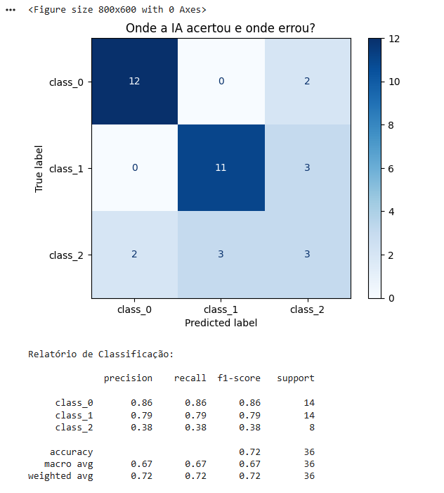
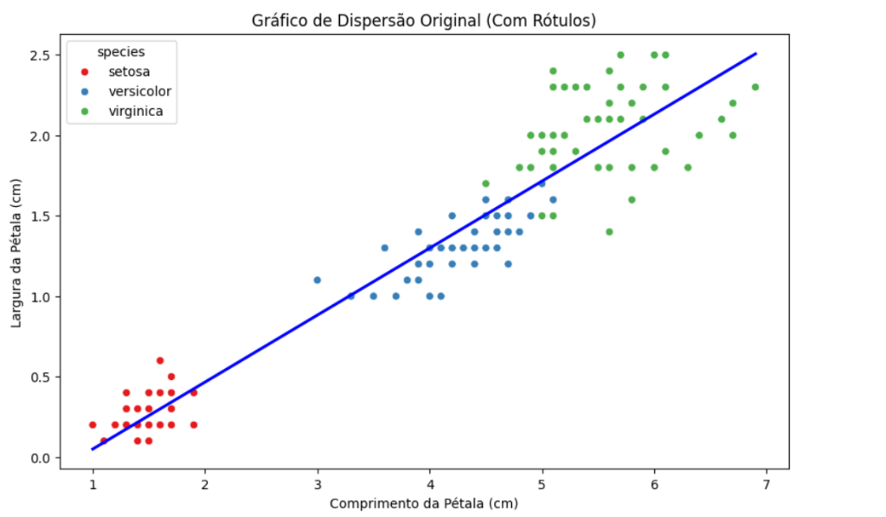
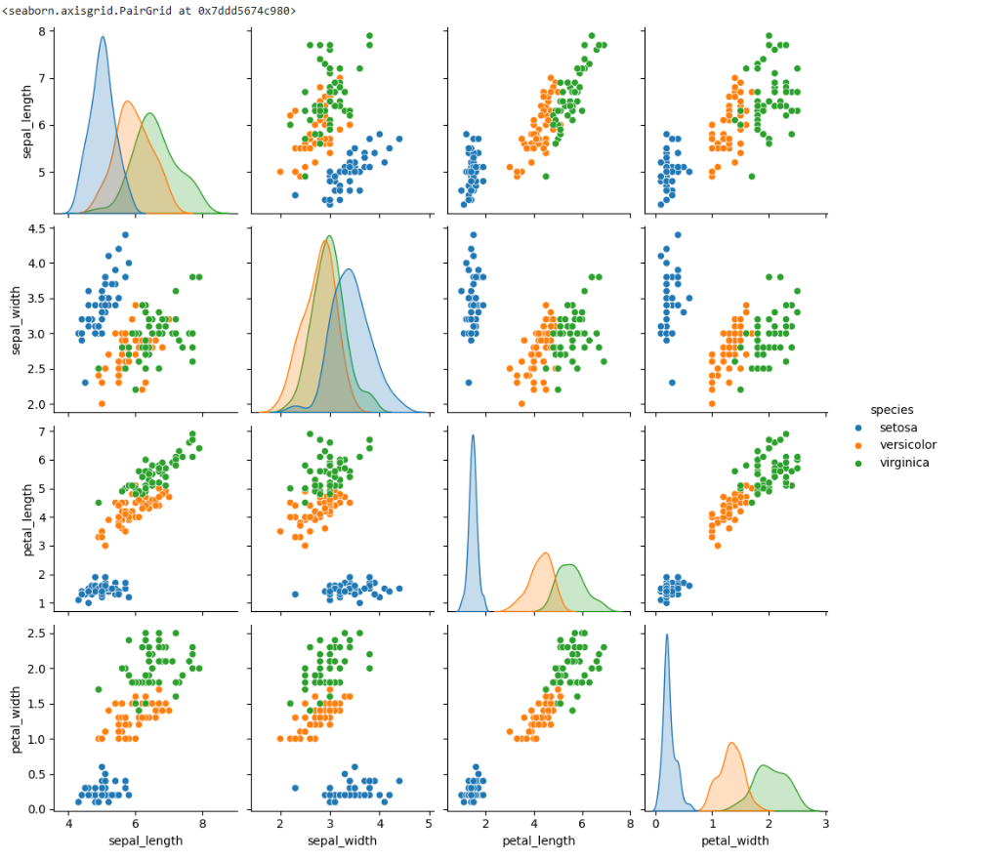
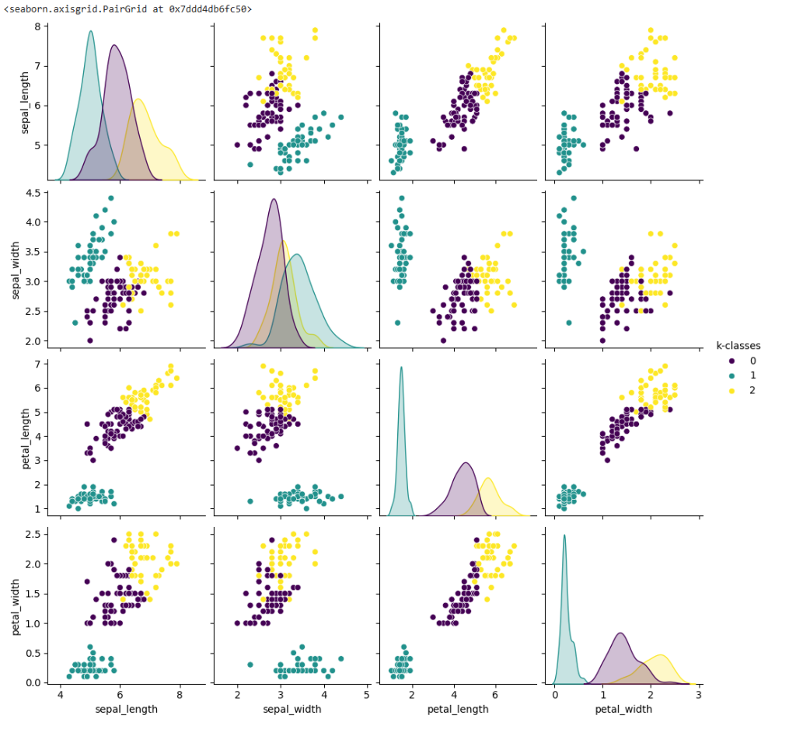
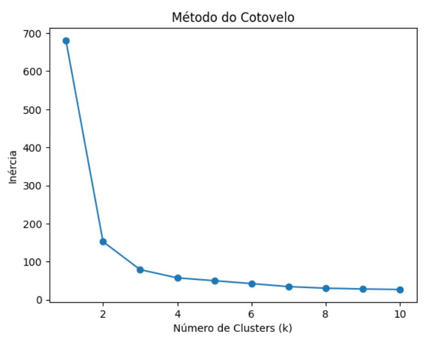
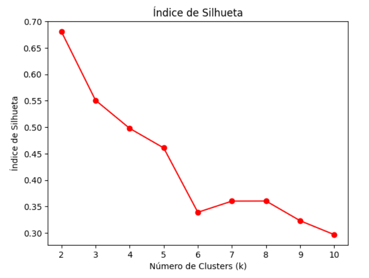

Introdução à IA, Prompts & Aprendizado Supervisionado vs. Não Supervisionado
Panorama Visual da IA, Engenharia de Prompt, Google Colab, Lab 1 (Vinhos KNN), Lab 2 (Iris K-Means com Gráficos Passo a Passo) & Onboarding Google Skills Boost
SENAI • Aperfeiçoamento Profissional em IA Generativa
Nossa Metodologia Intercalada (5 Dias / 20h)
Dia 1: Base, Prompts & 2 Labs
Panorama visual da IA, Prompts, Google Colab, Lab Supervisionado (Vinhos KNN), Lab Não Supervisionado (Iris K-Means) e Onboarding no Google Skills.
Dias 2 a 5: Labs Práticos
Iniciamos cada encontro com conceitos profundos e laboratórios em Python (Mini Hackathon, Keras, PLN, YOLOv8, Dialogflow & PythonAnywhere).
Dias 2 a 5: Skills Boost
Logo após o laboratório correlato, assistimos aos vídeos oficiais e realizamos os Quizzes das 4 atividades da trilha Google Cloud!
Módulo 1: Panorama Visual da IA
Entendendo visualmente a relação entre IA, Machine Learning, Deep Learning e IA Generativa.
Diagrama Visual: As 4 Camadas da IA
Generativa
Fluxo Visual: Programação vs. ML vs. IA Generativa
1. Software Clássico
Regras escritas por humanosif/else)2. Machine Learning
Aprende padrões dos dados3. IA Generativa
Criação via Modelos FundacionaisEcossistema Multimodal & Prática no Teachable Machine
Modalidades da IA Generativa
Tradução, resumos, chatbots, e-mails (Gemini, GPT).
Geração de scripts Python, SQL, JSON e testes.
Criação de fotos de produtos e artes (Imagen, Midjourney).
Leitura de fotos de estoque e geração de fichas técnicas.
Teste Rápido: Teachable Machine (Upload)
Treine uma rede neural no navegador sem precisar de webcam:
🔗 Acesse: teachablemachine.withgoogle.com
Selecione Image Project ➔ Standard Image Model ➔ Upload.
Módulo 2: Engenharia de Prompt na Prática
Exemplos reais de Antes vs. Depois, Few-Shot Prompting e Raciocínio Passo a Passo.
Exemplo Prático 1: Prompt Amador vs. Prompt de Engenharia
Prompt Vago (Amador)
❌ Resultado Ruim para Sistemas:
Gera um texto longo, genérico, cheio de clichês e impossível de salvar automaticamente nas colunas do banco de dados do sistema.
Prompt Estruturado (4 Pilares)
Contexto Produto: Tênis AirRun 300g, solado EVA, R$ 299.
Tarefa Crie um título de até 50 caracteres e 3 benefícios técnicos.
Formato Responda exclusivamente em JSON com as chaves
titulo e beneficios.
✅ Resultado: JSON limpo e pronto para o backend Python!
Exemplo Prático 2: Zero-Shot vs. Few-Shot & Chain-of-Thought
Few-Shot (Com Exemplos no Prompt)
Garante que o LLM responda apenas a etiqueta esperada pelo software!
Chain-of-Thought (Passo a Passo)
Resposta da IA:
1. Subtotal: 2 x 150 = R$ 300,00
2. Desconto (10%): -R$ 30,00 (R$ 270,00)
3. Com frete (+R$ 20): Total = R$ 290,00
Módulo 3: Google Colab na Prática
Nosso ambiente de programação Python gratuito na nuvem do Google.
☁️ O que é o Google Colab & Como Criar seu 1º Notebook
O que é o Google Colaboratory?
Ambiente interativo que roda 100% no navegador, sem instalar nada! Já vem com pandas, scikit-learn, matplotlib e seaborn prontos e salva tudo no seu Google Drive.
Células de Código vs. Células de Texto
+ Código: Bloco onde você digita Python e clica em ▶ (Play) para ver o gráfico na hora.+ Texto: Bloco para escrever títulos e explicações do relatório.
Renomear
Clique em Untitled0.ipynb no topo e mude para Aula01_Lab_Vinhos_KNN.ipynb.
Rodar Código
Clique no botão ▶ (Play) da célula ou pressione Shift + Enter.
Salvar
Pressione Ctrl + S para salvar no Google Drive ou faça download do .ipynb.
🎯 Conceito: O que é Aprendizado de Máquina Supervisionado?
Dados Químicos (Álcool, Cinzas...)
Gabarito Real (Tipo do Vinho)
.fit).predict)Por que se chama "Supervisionado"?
Porque o algoritmo aprende sob a "supervisão" de um gabarito previamente conhecido (Dados Rotulados). Durante o treino, mostramos à IA tanto as características do produto (X) quanto a resposta certa (y).
Os 2 Tipos de Problemas Supervisionados
- Classificação: O alvo $y$ é uma categoria (ex: Classificar vinho em
class_0,class_1ouclass_2). - Regressão: O alvo $y$ é um número contínuo (ex: Prever o preço de venda em Reais).
🍷 Lab 1 (Vinhos KNN): Passos 1, 2 e 3 + Saída do Console
Código (Blocos 1, 2 e 3 no Colab)
Saída do Bloco & Explicação
Saída no Google Colab1. Carregou 178 garrafas de vinho analisadas em laboratório.
2. Separou na matriz
X as 13 propriedades químicas (álcool, ácido málico, cinzas, magnésio, prolina, etc.).3. Guardou no vetor
y o rótulo verdadeiro do produtor (0, 1 ou 2).
🍷 Lab 1 (Vinhos KNN): Passos 4, 5 e 6 (Treino, Teste e Previsão)
Código (Blocos 4, 5 e 6 no Colab)
Saída Intermediária & Explicação
Saída dos Passos 4 e 5• A IA estuda nas 142 amostras de treino (
knn.fit).• Depois, aplicamos uma "prova surpresa" com os 36 vinhos de teste (
knn.predict) que ela nunca viu antes!• Veja no próximo slide a imagem do gráfico e do relatório gerados pelo Passo 6!
📊 Saída do Passo 6 (Lab 1): Matriz de Confusão & Relatório

•
class_0: Acertou 12 de 14 (errou apenas 2 como class_2).•
class_1: Acertou 11 de 14 (errou 3 como class_2).•
class_2: Acertou apenas 3 de 8 (confundiu 2 com class_0 e 3 com class_1).
• Accuracy Global:
0.72 (72% de acerto nas 36 amostras de teste).• F1-Score por Classe: Excelente na
class_0 (0.86) e class_1 (0.79), mas baixo na class_2 (0.38).
class_2 teve 0.38? (Insight de Engenharia!):Nos dados brutos do vinho, o atributo
proline vai até 1.680 enquanto nonflavanoid_phenols vale 0.13! Como o KNN mede distância direta sem padronizar a escala, a variável maior dominou o cálculo!
🌸 Lab 2 (Não Supervisionado): Conceito & Passo 1 (Carga do Iris)
Sem Rótulos / Sem Gabarito!
Passo 1: Importação e Carga Inicial
Saída do `df.head()` & Explicação
Saída no Google ColabTemos 4 medidas em cm (comprimento/largura da sépala e da pétala). Nosso objetivo será esconder a coluna species e fazer o K-Means descobrir as 3 espécies sozinho!
🌸 Lab 2 (Passo 2A): Visualização Exploratória — Dispersão
Código do Gráfico de Dispersão
• Os pontos vermelhos (setosa) formam uma ilha isolada no canto inferior esquerdo (pétalas pequenas).
• Os pontos azuis (versicolor) e verdes (virginica) crescem seguindo uma forte tendência linear (linha azul)!

🌸 Lab 2 (Passo 2B): Visão Geral Multivariada (`pairplot`)
Código do Pairplot Original
sb.pairplot faz?Cruza todas as 4 variáveis numéricas duas a duas em uma matriz $4 \times 4$ (16 gráficos de uma só vez!).
Mostram a distribuição de densidade de cada medida. Veja nas duas últimas linhas (
petal_length e petal_width) como a montanha azul (setosa) é totalmente separada das demais!

🌸 Lab 2 (Passo 3): Implementando o K-Means Sem Rótulos
Código do Agrupamento K-Means
Mesmo sem a coluna
species, o K-Means criou os grupos 0 (roxo), 1 (verde-água) e 2 (amarelo) quase idênticos às espécies biológicas reais!

🌸 Lab 2 (Passos 4 e 5A): Acurácia & Método do Cotovelo
Passo 4: Acurácia & Passo 5A: Cotovelo
Lendo o Gráfico ao lado: A inércia despenca de `680` ($k=1$) para `152` ($k=2$) e `78` ($k=3$). Em $k=3$ forma-se o "cotovelo" onde a curva estabiliza!

🌸 Lab 2 (Passo 5B): Índice de Silhueta & Conclusão do Lab
Código do Índice de Silhueta
• O pico ocorre em $k=2$ (`0.68`, pois a Setosa é muito isolada das outras duas) e mantém um score alto em $k=3$ (`0.55`) antes de cair drasticamente para $k \ge 4$.
• Conclusão: Combinando Cotovelo + Silhueta, confirmamos matematicamente os 3 grupos com 89,33% de precisão sem nenhum rótulo!

🎓 Onboarding: Trilha Google Cloud Skills Boost
As 4 Atividades da Trilha Oficial
Programa: Iniciante: programa de aprendizado Introdução à IA generativa
- Dia 2: Atividade 1 — Introdução à IA Generativa
- Dia 3: Atividade 2 — Introdução aos Grandes Modelos de Linguagem (LLMs)
- Dia 4: Atividade 3 — Introdução à IA Responsável
- Dia 5: Atividade 4 — Aplicação Prática & Conclusão da Trilha
Passo a Passo do Onboarding Hoje
- 1. Acessar o portal Google Skills com sua conta Google pessoal.
- 2. Localizar a trilha Iniciante: Introdução à IA generativa e clicar em Começar / Inscrever-se.
- 3. Ativar o Perfil Público de Credenciais para emissão dos 4 Badges.
⚠️ REGRA OBRIGATÓRIA DA TRILHA: ASSISTIR AOS VÍDEOS E LEITURAS!
Para que a plataforma contabilize 100% de conclusão e libere os Badges Oficiais do Google Cloud, é indispensável assistir integralmente aos vídeos explicativos de cada módulo (use legendas em Português) e revisar os documentos antes de responder aos Quizzes!
Fim do Dia 01! 🚀
Salve seus notebooks no Google Drive e traga seu fone de ouvido amanhã para conquistarmos o 1º Badge do Google Cloud!